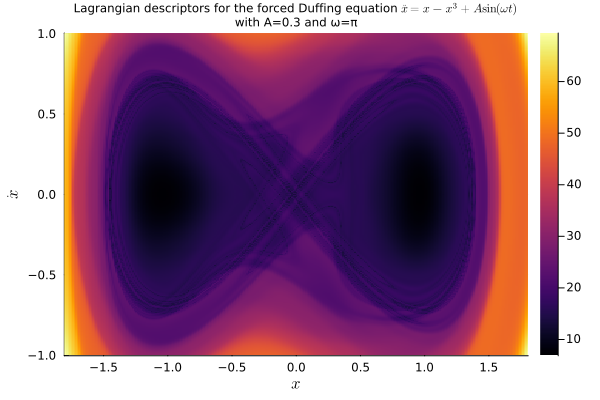

LagrangianDescriptors.jl documentation
About
The dynamics of evolutionary systems can be quite intricate. The method of Lagrangian Descriptors helps to visualize the complicate behavior of such systems and to make sense of it. In a recent article, Wiggins and and García-Garrido call it [a method for] painting the phase portrait (of a dynamical system) (see S. Wiggins and V. J. García-Garrido, Painting the Phase Portrait of a Dynamical System with the Computational Tool of Lagrangian Descriptors (AMS Notices, June/July 2022).
The method is akin to droping colored ink in a fluid flow, tracking the dye as it is transport by the flow, and revealing the pattern created after a certain period of time. The difference being that the color doesn't get diffused as in a real fluid, so the image doesn't get blurred and one gets a clearer picture.
It is similar to drawing a phase portrait, which displays a collection of orbits, but in this method each orbit is painted according to its dynamic behavior, better revealing the overall picture.
The image below, for instance, shows the dynamics of a periodically-forced Duffing equation, with a particular combination of parameters and near time $t=0$ (see Tutorial: Periodically-forced Duffing equation):

How it works
The package works by
- taking a differential equation problem of a type defined by SciML/DifferentialEquations.jl, with a given time span $(t_0, t_f)$;
- taking an infinitesimal descriptor $M=M(du, u, p, t)$ that will be integrated along a solution $u(t) = u(t; u_0)$, to yield the forward Lagrangian descriptor $L_{\mathrm{fwd}}(u_0) = \int_{t_0}^{t_f} M(du(t), u(t), p, t)\;\mathrm{d}t$ and, similarly, the backward Lagrangian descriptor $L_{\mathrm{bwd}}(u_0) = \int_{t_0}^{t_f} M(du(-t), u(-t), p, 2t_0 - t)\;\mathrm{d}t$, for a given initial condition $u_0$;
- generating an augmented problem of the same time and with four components, for solving the original equation forward and backward in time, and for solving the Lagrangian descriptors forward and backward in time, as well;
- creating a
LagrangianDescriptorProblemwrapping an EnsembleProblem for the augmented system and with a given collection $uu_0$ of initial conditions. - solving the wrapped ensemble problem and returning a
LagrangianDescriptorSolutioncontaining the associated collection of (forward and backward) Lagrangian descriptors values at the final time of the simulations (which is $t_f$ for the forward components and $2t_0 - t_f$ for the backward ones). - Finally, one can visualize either the forward, or the backward, or the sum, or even the difference, of the forward and backward Lagrangian descriptor with a plot recipe for the
LagrangianDescriptorSolution.
Current state
The package is still in an embrionary phase and currently accepts differential equations of the type ODEProblem. Problems like SDEProblem and RODEProblem will be implemented soon. Other problems will come eventually.
The plot recipe works for some types of collections of initial conditions (e.g. a AbstractVector{<:Number} for scalar problems and AbstractMatrix{<:AbstractVector{<:Number}} for two-dimensional problems). More general and flexible plot recipes will also be implemented.
Developers
JuliaDynamics/LagrangianDescriptors.jl is currently being developed by Ricardo M. S. Rosa, but contributors are welcome.
Cite
Just cite the github repo JuliaDynamics/LagrangianDescriptors.jl for now, while the package is not yet registered.